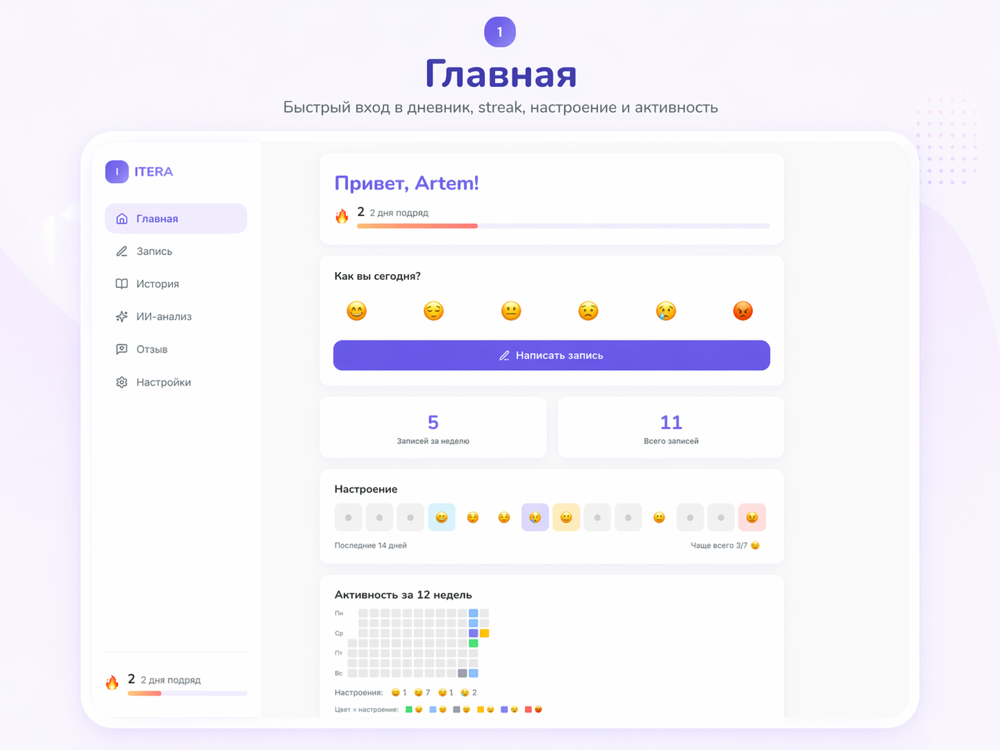
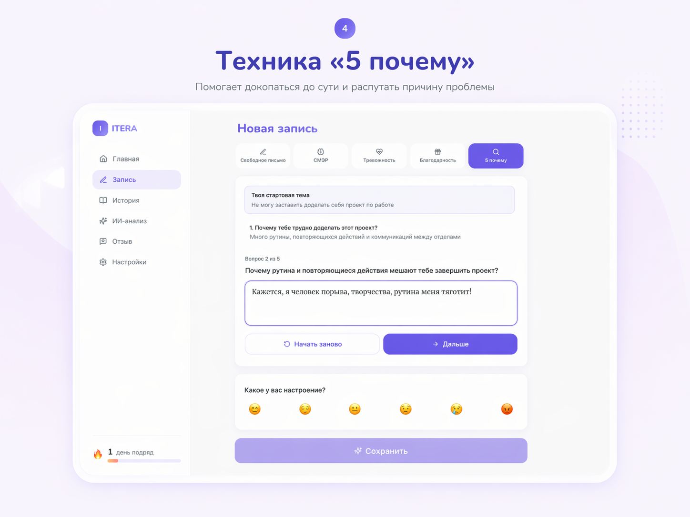
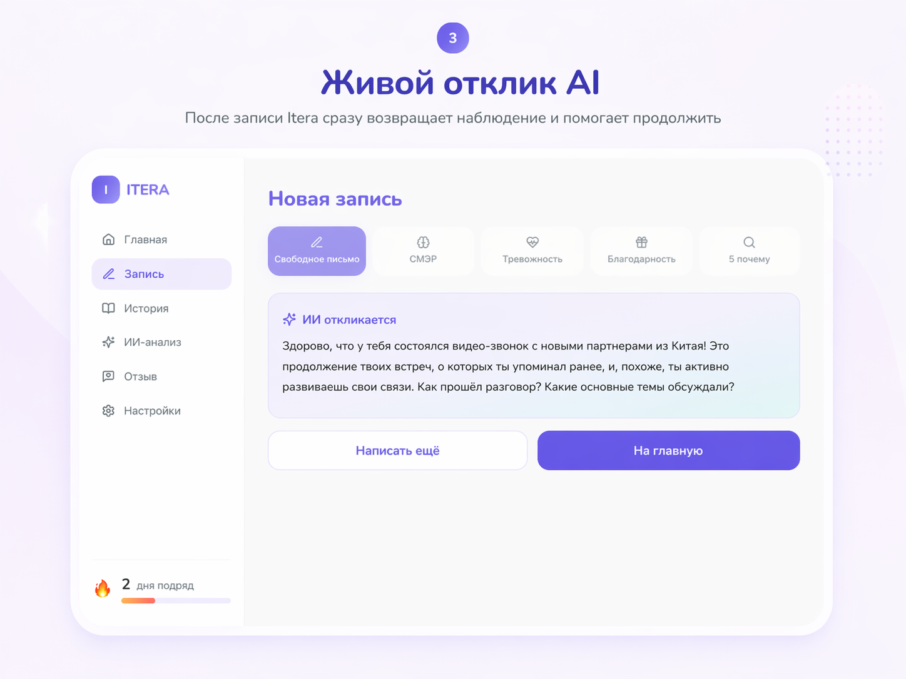
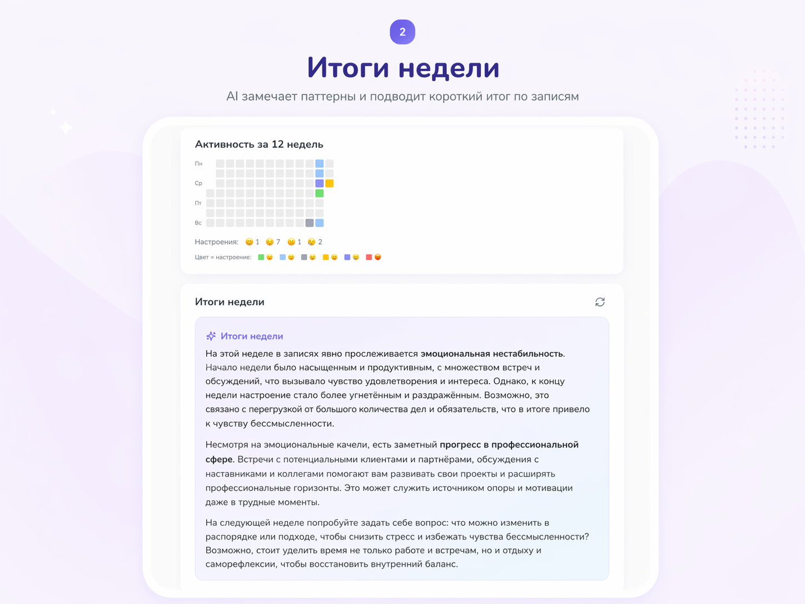
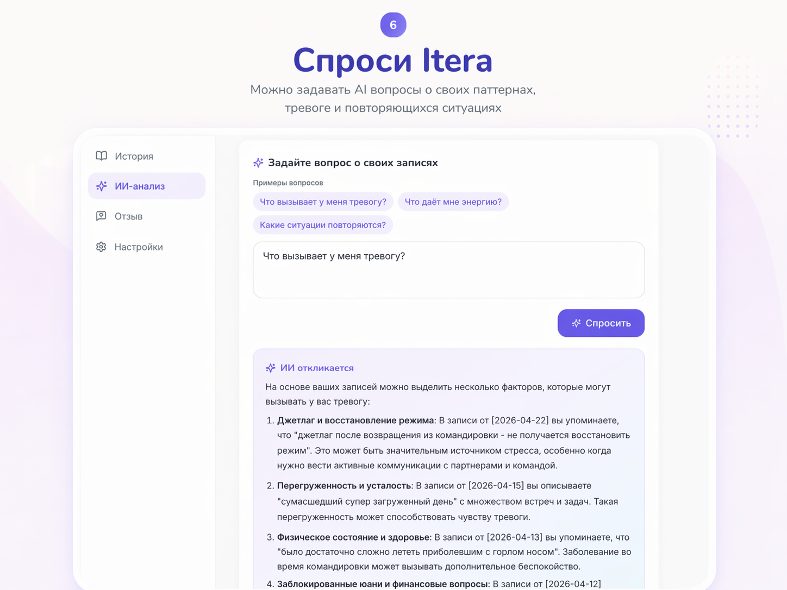
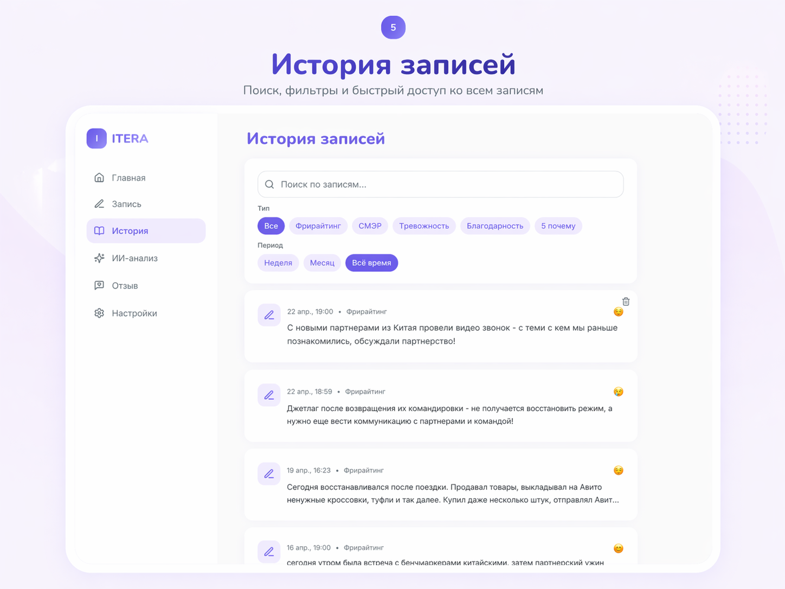

Пишете как чувствуете. ИИ замечает темы, которые повторяются между записями, и отражает их обратно. Раз в неделю — короткий инсайт по всему дневнику.

Мы часто теряем важное: инсайт с терапии, тему, которая повторяется неделями, повод, с которого всё начинается.
Не «обнули всё и начнём заново». Когда вы пишете сегодня, ITERA видит, что вы писали вчера, неделю назад — и мягко проводит связи. Так как это делал бы внимательный друг.
Свободное письмо, СМЭР (КПТ), работа с тревогой, благодарность, «5 почему». Вы выбираете технику — она направляет структуру, вы сохраняете голос.
Без диагнозов, без «я вижу, что…», без советов из учебника. Если связи с прошлым нет — ITERA просто рядом. Это важно.
Свободное письмо — когда хочется выговориться. СМЭР — когда нужно распутать мысль. «5 почему» — когда хочется дойти до сути. Тревога и благодарность — для своих случаев.

Без ограничений по длине. Без осуждения. ITERA читает запись и отвечает наблюдением, а не советом — с учётом того, что вы писали раньше.

Активность за 12 недель + авто-инсайт: что повторяется, где эмоциональные качели, на что обратить внимание дальше. Короткий отчёт, не лекция.

Вы ходите к психологу — но терапия раз в неделю. ITERA даёт пространство фиксировать инсайты, эмоции и триггеры между встречами. Материал становится богаче, прогресс — заметнее.
Терапия не подходит по деньгам, графику или опыту. Нужен способ разбираться со своими состояниями, не теряя структуры и доброжелательности. ITERA не заменяет терапевта, но не оставляет одного.
Вы и так ведёте заметки, читаете про КПТ, пробовали медитации. Но хотелось бы, чтобы всё это собиралось в общую картину — чтобы видеть рост, а не только отдельные точки.
ITERA читает ваши записи как контекст и отвечает на прямые вопросы о вас. Не советы из интернета — ответ на ваших собственных данных, с датами и цитатами записей.
Задайте вопрос сами или начните с подсказок: «Что даёт мне энергию?», «Какие ситуации повторяются?».


Фильтры по технике (фрирайтинг, СМЭР, тревожность, благодарность, 5 почему) и по периоду (неделя / месяц / всё время). Настроение видно сразу — эмодзи на каждой карточке.
Полнотекстовый поиск — чтобы вернуться к нужной записи, даже если помните только слово.
Мы работаем с очень чувствительным материалом. Поэтому по умолчанию:
Мы выстраиваем продукт вместе с первыми пользователями и хотим честной цены только когда ITERA действительно заменяет часы на разборки в голове.
Все техники, AI-память, недельные инсайты и PDF-экспорт.
После беты: подписка ~299 ₽ / мес с 7-дневным триалом.
Ранние пользователи получат постоянную скидку.
Две минуты. Одна запись. ИИ с памятью между встречами — уже внутри.
Написать первую запись